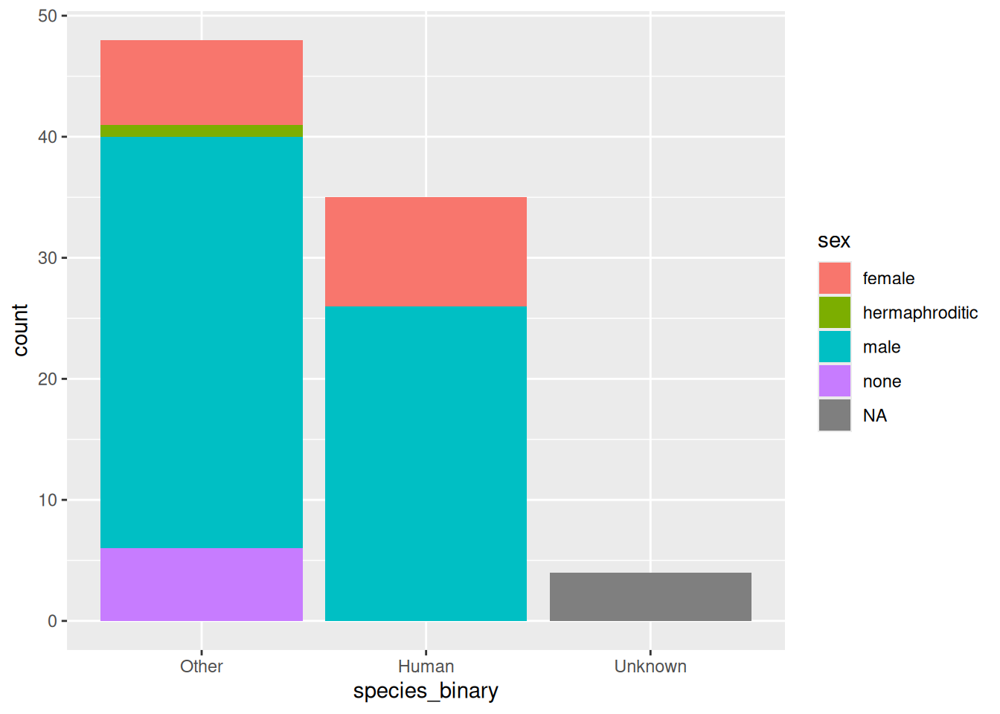
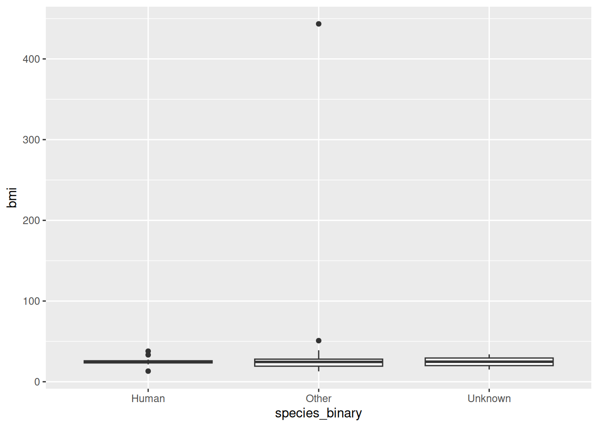
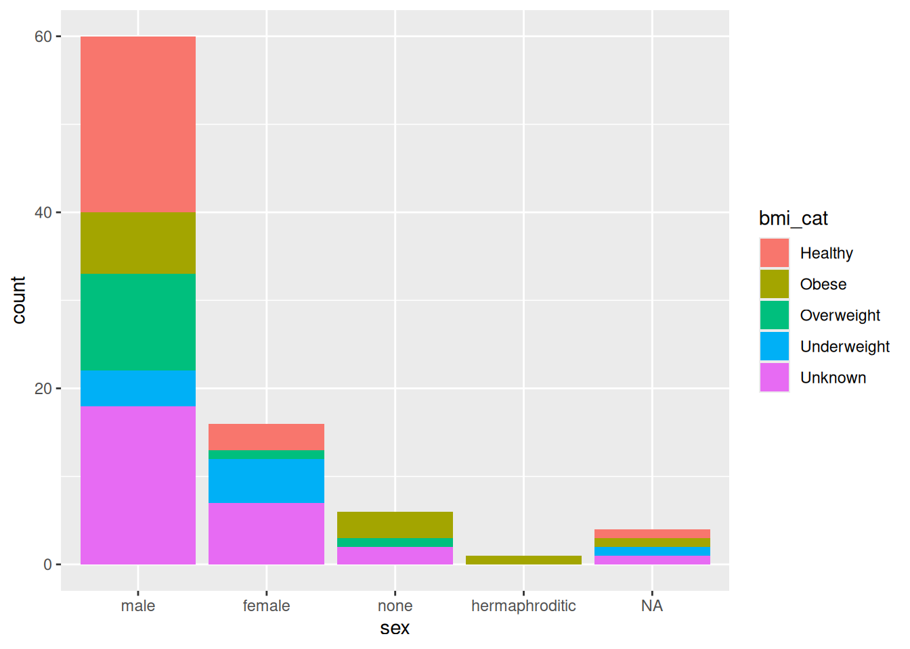
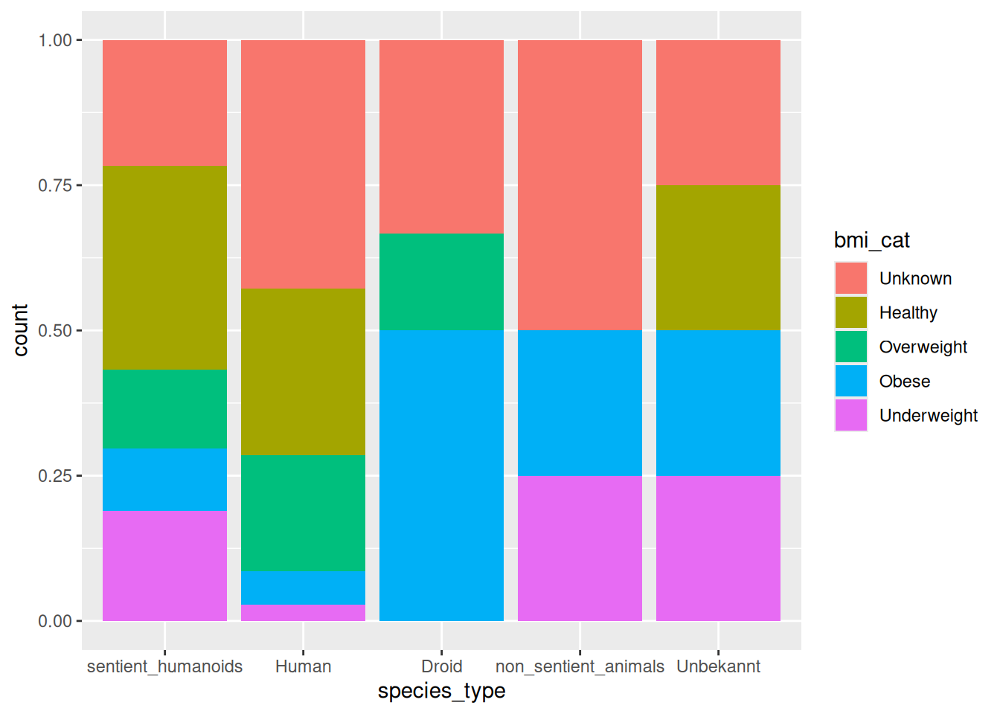

library(tidyverse)Praktikum 05d: if_else(), case_when(), fct_infreq()
Tastaturkürzel
| Einen neuen Code-chunk hinzufügen | Ctrl + Alt + I |
| Code “Zeile für Zeile” innerhalb eines Code-chunks ausführen | Ctrl + Enter |
| Den gesamten Code-chunk ausführen | Ctrl + Shift + Enter |
| (Aus-)kommentieren | Ctrl + Shift + C |
Das Pipe |> |
Ctrl + Shift + M |
Der Zuweisungs-Operator <- |
Alt + - |
Packages laden
Wir benutzen den starwars-Datensatz, der in tidyverse enthalten ist.
- Lädt das
tidyverse-Package
Daten
- Erkundet den
starwarsDatensatz. Wie viele verschiedene Arten (species) gibt es?
glimpse(starwars)Rows: 87
Columns: 14
$ name <chr> "Luke Skywalker", "C-3PO", "R2-D2", "Darth Vader", "Leia Or…
$ height <int> 172, 167, 96, 202, 150, 178, 165, 97, 183, 182, 188, 180, 2…
$ mass <dbl> 77.0, 75.0, 32.0, 136.0, 49.0, 120.0, 75.0, 32.0, 84.0, 77.…
$ hair_color <chr> "blond", NA, NA, "none", "brown", "brown, grey", "brown", N…
$ skin_color <chr> "fair", "gold", "white, blue", "white", "light", "light", "…
$ eye_color <chr> "blue", "yellow", "red", "yellow", "brown", "blue", "blue",…
$ birth_year <dbl> 19.0, 112.0, 33.0, 41.9, 19.0, 52.0, 47.0, NA, 24.0, 57.0, …
$ sex <chr> "male", "none", "none", "male", "female", "male", "female",…
$ gender <chr> "masculine", "masculine", "masculine", "masculine", "femini…
$ homeworld <chr> "Tatooine", "Tatooine", "Naboo", "Tatooine", "Alderaan", "T…
$ species <chr> "Human", "Droid", "Droid", "Human", "Human", "Human", "Huma…
$ films <list> <"A New Hope", "The Empire Strikes Back", "Return of the J…
$ vehicles <list> <"Snowspeeder", "Imperial Speeder Bike">, <>, <>, <>, "Imp…
$ starships <list> <"X-wing", "Imperial shuttle">, <>, <>, "TIE Advanced x1",…starwars |> count(species)# A tibble: 38 × 2
species n
<chr> <int>
1 Aleena 1
2 Besalisk 1
3 Cerean 1
4 Chagrian 1
5 Clawdite 1
6 Droid 6
7 Dug 1
8 Ewok 1
9 Geonosian 1
10 Gungan 3
# ℹ 28 more rowsWir werden zwei Methoden benutzen, um den Anzahl der species zu reduzieren, sodass die Variable mehr Sinn macht:
dplyr::if_else()dplyr::case_when()
True/False: if_else()
- Erstellt eine neue Spalte mit
if_else(), diespecies_binaryheisst, wobei species_binary = Other fallsspecies!= “Human”. Wie ist es mitNA? Hint:?if_else. Speichert den resultierenden Dataframe in einem neuen Objektdf.
df <- starwars |>
mutate(species_binary = if_else(species != "Human", "Other", species, missing = "Unknown"))
df |>
count(species_binary, species)# A tibble: 38 × 3
species_binary species n
<chr> <chr> <int>
1 Human Human 35
2 Other Aleena 1
3 Other Besalisk 1
4 Other Cerean 1
5 Other Chagrian 1
6 Other Clawdite 1
7 Other Droid 6
8 Other Dug 1
9 Other Ewok 1
10 Other Geonosian 1
# ℹ 28 more rows- Erstellt ein Barplot von
species_binaryauf der x-Achse und ordnet sie zursexVariable.species_binarysollte abseteigend dargestellet werden (fct_infreq()).
df |>
mutate(species_binary = fct_infreq(species_binary)) |>
ggplot(aes(x = species_binary, fill = sex)) +
geom_bar()
Mehrere Bedingungen: case_when()
Die Funktion case_when() in Kombination mit mutate() erlaubt es neue Variablen basierend auf bestimmten Konditionen anderer Variablen zu erstellen.
Stetige Variable
- Erstellt zusätzlich zur Variable
species_binaryeine Spalte für
und eine kategorielle Variable bmi_cat mit folgenden Werten:
- BMI < 18.5: Underweight
- 18.5 BMI < 25: Healthy
- 25 BMI < 30: Overweight
- BMI 30: Obese
und speichert den resultierenden Dataframe in einem neuen Objekt df1.
df1 <- starwars |>
mutate(species_binary = if_else(species != "Human", "Other", species, missing = "Unknown")) |>
mutate(bmi = mass / (height / 100)^2, .after = mass) |>
mutate(bmi_cat = case_when(
is.na(bmi) ~ "Unknown",
bmi < 18.5 ~ "Underweight",
bmi < 25 ~ "Healthy",
bmi < 30 ~ "Overweight",
.default = "Obese"
))- Erstellt ein Boxplot der Variable
bmigegenspecies_binary:
df1 |>
ggplot(aes(x = species_binary, y = bmi)) +
geom_boxplot()
Gibt es outliers?
df1 |>
filter(bmi > 400) |>
select(name, bmi, height, mass)# A tibble: 1 × 4
name bmi height mass
<chr> <dbl> <int> <dbl>
1 Jabba Desilijic Tiure 443. 175 1358- Erstellt ein barplot von
sexmit Zuordnung zur Variablebmi_cat.sexsollte abseteigend dargestellet werden (fct_infreq()).
df1 |>
mutate(sex = fct_infreq(sex)) |>
ggplot(aes(x = sex, fill = bmi_cat)) +
geom_bar()
Kategorielle Variable
Im starwars Datensatz gibt es vier Typen von Kreaturen:
- Menschen = Human,
- Empfindungsfähige Humanoide = Sentient Humanoid,
- Nicht empfindungsfähiges Tiere = Non-Sentient Animal,
- Droiden = Droid.
Hier ist die Liste von empfindungsfähigen Humanoiden:
sentient_humanoids <- c("Aleena", "Besalisk", "Cerean", "Chagrian", "Clawdite", "Ewok", "Dug", "Zabrak", "Geonosian", "Gungan", "Hutt", "Iktotchi", "Kaleesh", "Kel Dor", "Mirialan", "Mon Calamari", "Muun", "Nautolan", "Neimodian", "Pau'an", "Togruta", "Twi'lek", "Wookiee", "Quermian", "Rodian", "Skakoan", "Sullustan", "Tholothian", "Togruta", "Toong", "Twi'lek", "Vulptereen", "Xexto", "Yoda's species", "Zabrak")und die Liste von nicht empfindungsfähigen Tieren:
non_sentient_animals <- c("Trandoshan", "Kaminoan", "Toydarian")- Erstellt eine Spalte (
species_type) für den Typ der Kreaturen. Benutztcase_when()un%in%dafür:
df1 |>
mutate(species_type = case_when(
is.na(species) ~ "Unbekannt",
species %in% sentient_humanoids ~ "sentient_humanoids",
species %in% non_sentient_animals ~ "non_sentient_animals",
.default = species
)) |>
count(species_type, species)# A tibble: 38 × 3
species_type species n
<chr> <chr> <int>
1 Droid Droid 6
2 Human Human 35
3 Unbekannt <NA> 4
4 non_sentient_animals Kaminoan 2
5 non_sentient_animals Toydarian 1
6 non_sentient_animals Trandoshan 1
7 sentient_humanoids Aleena 1
8 sentient_humanoids Besalisk 1
9 sentient_humanoids Cerean 1
10 sentient_humanoids Chagrian 1
# ℹ 28 more rows- Nimmt Jabba the Hutt (“Jabba Desilijic Tiure”) raus und erstellt ein barplot
(position = "fill")der Variablespecies_typemitbmi_catals Zuordnung-Variable. Beidespecies_typeundbmi_catsollten absteigend dargestellt werden.
df1 |>
mutate(species_type = case_when(
is.na(species) ~ "Unbekannt",
species %in% sentient_humanoids ~ "sentient_humanoids",
species %in% non_sentient_animals ~ "non_sentient_animals",
.default = species
)) |>
mutate(species_type = fct_infreq(species_type)) |>
mutate(bmi_cat = fct_infreq(bmi_cat)) |>
filter(name != "Jabba Desilijic Tiure") |>
ggplot(aes(x = species_type, fill = bmi_cat)) +
geom_bar(position = "fill")